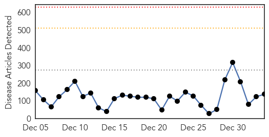
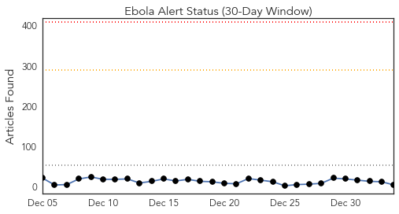
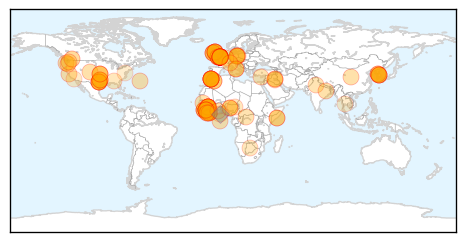
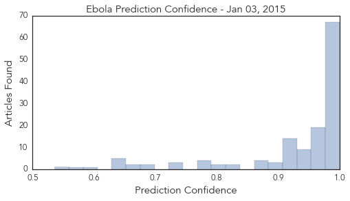

Unknown
30-Day Web Trend
0 alerts, 0 warnings

30-Day Twitter Trend
0 alerts, 0 warnings

Article Locations

Article Confidences

Top Articles:
- 0.980
- Opposition blames Odisha government for jaundice outbreak
- 0.980
- Opposition blames Odisha government for jaundice outbreak
- 0.979
- Opposition blames Odisha government for jaundice outbreak
- 0.974
- Hunting the 'fiery serpent': The quest to wipe out Guinea worm
- 0.960
- Health officials concerned weather will increase cases of flu
- 0.946
- Fourth flu death confirmed in Dallas County - Story
- 0.936
- Flu didn’t take a holiday in South Carolina
- 0.920
- Opp lambasts Odisha govt for spread of jaundice in Sambalpur
- 0.917
- Chicago Tribune
- 0.917
- Chicago Tribune
- 0.917
- Chicago Tribune
- 0.917
- Chicago Tribune
- 0.917
- Chicago Tribune
- 0.917
- Chicago Tribune
- 0.917
- Chicago Tribune
- 0.917
- Chicago Tribune
- 0.900
- Latest flu deaths add to troubling U.S. epidemic
- 0.856
- Biloxi pharmacy offers free flu vaccines
- 0.852
- Thomasville pediatrician shares urgent message for parents about the flu
- 0.815
- Stubborn Thyroid Issues? Several Symptoms You Haven't Noticed
- 0.786
- Two new flu deaths are confirmed in Dallas County
- 0.784
- Preventative measures encouraged for limiting flu
- 0.689
- Salmonella Cluster Found in Massachusetts
- 0.672
- Ashland schools take action in chickenpox outbreak
- 0.585
- Video: French army train Lebanese troops
- 0.585
- British nurse with Ebola 'now critical'
- 0.585
- Swedes protest string of shocking mosque attacks
- 0.585
- Suspected Islamists kidnap dozens in Nigeria
- 0.585
- Migrant ‘ghost ship’ arrives in Italian port
- 0.585
- Israeli settlers hurl rocks at US diplomatic cars
- 0.585
- Egyptian Christians abducted by Islamists in Libya
- 0.585
- DR Congo tax on rape victim hospital sparks fury
- 0.584
- UK Ebola patient deteriorating
- 0.547
- British nurse with Ebola now in 'critical' condition, doctors say
- 0.537
- Massachusetts Department of Public Health Identifies Cluster of Salmonella Illnesses at Churrascaria Aveirense Restaurant
- 0.528
- Shortage of doctors to hit services at Dumka hosp
Top Tweets:
- 0.548
- RT: Se acercan los precarnavales en Barranquilla, te invitamos a nuestra tienda ubicada en el CC. Villa Country. Lc.210B. h…
Ebola
30-Day Web Trend
0 alerts, 0 warnings

30-Day Twitter Trend
0 alerts, 0 warnings

Article Locations
Article Confidences
Top Articles:
- 1.000
- U.N. aims to get Ebola cases to zero in 2015
- 1.000
- 20,000 cases on, Ebola mysteries remain
- 1.000
- Ebola in UK: Patient being tested for deadly virus at Swindon's Great Western Hospital
- 1.000
- UK Ebola nurse Pauline Cafferkey now in 'critical condition' after health deteriorates in London hospital
- 1.000
- Nearly 40 years and more than 20,000 cases in, many Ebola mysteries remain
- 0.999
- Ebola-struck UK nurse in 'critical' condition
- 0.999
- Ebola-hit UK nurse in critical condition
- 0.999
- Top UK doctor: Ebola screenings should be improved
- 0.999
- Ebola hit UK nurse now in critical condition
- 0.999
- Potential Ebola case being monitored in Berlin
- 0.999
- Ebola in Sierra Leone's Kailahun: from hotspot to zero infections
- 0.999
- Suspected South Korean Ebola Patient Transported to Germany
- 0.999
- Ebola-infected UK nurse fighting for her life (Update 3)
- 0.999
- Royal Free London Hospital : Pauline Cafferkey, British nurse infected with Ebola in a critical condition
- 0.999
- Ignore predictions of lethal pandemics and pay attention to what really matters
- 0.998
- South Korean medic evacuated over Ebola fears
- 0.998
- Ebola in Britain: Cameron prays for nurse in critical condition
- 0.998
- Ebola death toll nears 8,000: WHO
- 0.998
- British nurse Pauline Cafferkey battling Ebola in London hospital is 'critical'
- 0.998
- Ebola outbreak can be stamped out' says chief of UN mission Anthony Banbury in Africa
- 0.998
- Patient being tested for Ebola virus at south west hospital
- 0.998
- First Ebola Patient Diagnosed in U.K. in Critical Condition
- 0.998
- Haitian Government denies presence of Ebola in Haiti amid spread of rumors
- 0.998
- Ebola-hit UK nurse Pauline Cafferkey in critical condition
- 0.997
- British Ebola nurse in critical condition, hospital says
- 0.997
- E. Texas doctors say flu patients shouldn't rush to the ER - KTRE.com
- 0.997
- E. Texas doctors say flu patients shouldn't rush to the ER - KLTV.com-Tyler, Longview, Jacksonville, Texas
- 0.997
- Get a handle on Ebola
- 0.997
- UK passengers on Ebola flights traced
- 0.996
- Ignore predictions of lethal pandemics and pay attention to what really matters
- 0.996
- UK Ebola nurse Pauline Cafferkey 'in critical condition'
- 0.996
- UK Ebola nurse Pauline Cafferkey 'in critical condition'
- 0.995
- Ebola in the UK: New suspected case in South Gloucestershire, as Scottish nurse worsens
- 0.995
- Somalia denies registering first Ebola case
- 0.994
- S. Korean health worker tests negative for Ebola in preliminary test
- 0.993
- London Hospital Says British Ebola Patient in Critical Condition
- 0.993
- SKorean Ebola medic flown to Germany for anonymity
- 0.992
- KBS World Radio
- 0.992
- British Ebola Nurse Now Critical In Hospital
- 0.991
- American survivors of Ebola recount their experiences
- 0.991
- First Ebola victim may have been infected by bats
- 0.991
- Gulf Daily News World News Ebola fight may be won this year says UN
- 0.990
- South Korean suspected of Ebola hospitalised in Berlin
- 0.990
- San Angelo Standard Times
- 0.990
- Ebola volunteers: Confronting crisis is ‘the right thing’
- 0.990
- South Korean suspected of Ebola hospitalized in Berlin
- 0.989
- Scottish nurse with Ebola listed in critical condition
- 0.989
- British Ebola nurse ′critical′ after condition worsens
- 0.988
- Ebola Sufferer Nurse Pauline Cafferkey 'Deteriorating' And Condition Is Critical, Royal Free Hospital Says
- 0.988
- (LEAD) S. Korean healthcare worker suspected of Ebola contraction in stable condition
Showing top 50 articles...
Top Tweets:
- 0.946
- Guinea, Liberia & Sierra Leone now have sufficient capacity to isolate & treat 100% of Ebola patients. EbolaResponse
- 0.905
- RT: UNICEF hunting the ebola virus http://t.co/tZEEngXmzM EbolaResponse
- 0.866
- The Ebola epidemic: a transformative moment for global health | @WHO http://t.co/wmZNeSXZN1
- 0.644
- RT: THIS. Ebola in Liberia: An Epidemic of Rumors by Helen Epstein http://t.co/d68Wunlacd via
- 0.643
- British Nurse Suffering from Ebola in Critical Condition: Hospital http://t.co/dv9c69jpbd
- 0.624
- Amazing: experts noted first cases in Sierra Leone in mid-March but did not confirm Ebola until May 24 http://t.co/0Gbz7JMQTX